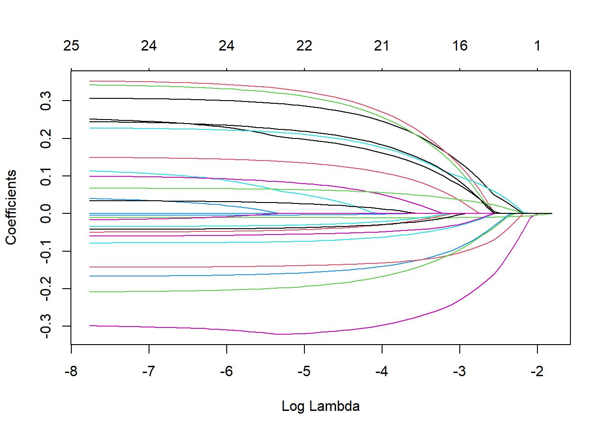
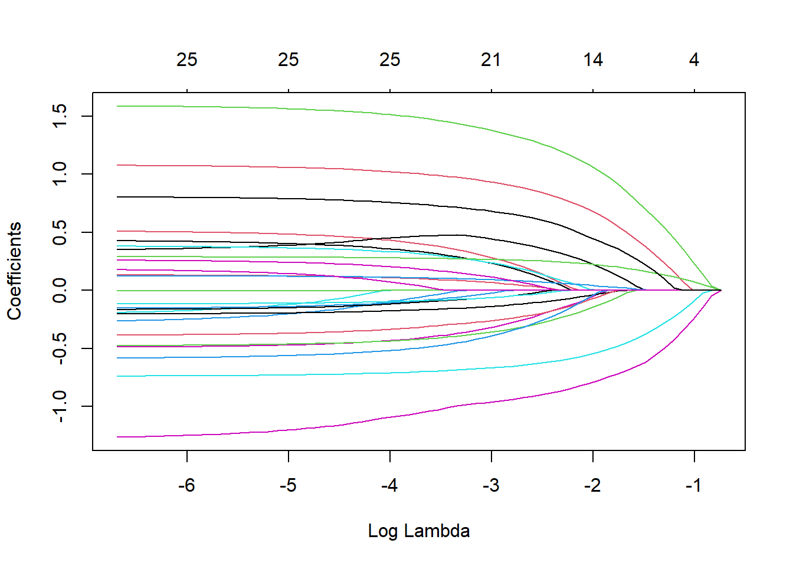
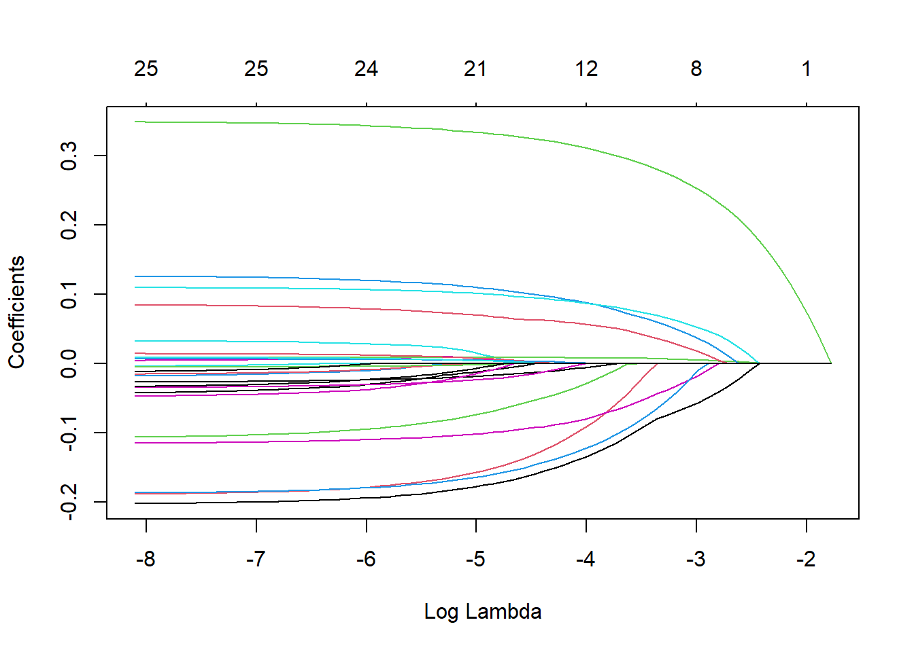

This page shows all steps taken for variable selection. Potentially relevant variables from the survey were identified based on previous qualitative studies among college students. A LASSO regression was first used to identify which variables are relevant to each model. A ten-fold cross validation was used to determine the minimum lambda value (the optimum level of regularization). General linear regression models were then fit for each dependent variable including all potential covariates using the optimum level of regularization.
Age, gender, and race/ethnicity were included as covariates in all models regardless of the LASSO regression results due to previous literature indicating associations with diet outcomes. Cohort was also included in all models to control for differences between the two cohorts. Covariates with high p-values were then removed from the models if removing them had no major impact on the results, to help prevent overfitting the models.
y <- bns_combined_imputed_df$ff_numericx <-model.matrix(ff_numeric~SNAP3 + Cohort + race_eth + gender + age + cooking_confident + living_with_family + food_insecure_2item + units_four + unpaid_work_hours_tens + paid_work_hours_tens + caregiving_hours_tens + health_conscious + kitchen_access + storage_access + storage_room + physical_activity + firstgen + household_size + housing_insecure + homelessness_year, bns_combined_imputed_df)[,-1] # the -1 drops the interceptmodel.lasso <-glmnet(x, y, alpha =1)set.seed(123) # Setting a seed to ensure I get the same results each time I knitcv.lasso <-cv.glmnet(x, y, alpha =1)# Fit the final model using the min lambdamodel <-glmnet(x, y, alpha =1, lambda = cv.lasso$lambda.min)round(coef(model), digits =1)
26 x 1 sparse Matrix of class "dgCMatrix"
s0
(Intercept) 1.6
SNAP3Likely Eligible Non-Recipient 0.3
SNAP3Income-Ineligible Non-Recipient 0.3
CohortStatewide 0.3
race_ethHispanic White .
race_ethNon Hispanic African American 0.0
race_ethNon Hispanic Asian -0.3
race_ethOther/Unknown 0.2
genderMale 0.1
age 0.0
cooking_confidentYes -0.2
living_with_familyYes 0.2
food_insecure_2itemYes 0.1
units_four 0.0
unpaid_work_hours_tens 0.0
paid_work_hours_tens 0.1
caregiving_hours_tens 0.0
health_consciousYes -0.1
kitchen_accessYes -0.1
storage_accessYes 0.0
storage_roomYes -0.1
physical_activityYes -0.2
firstgenYes .
household_size 0.0
housing_insecure1 .
homelessness_yearYes 0.2
0.1 appeared to be a reasonable cutoff. Based on this cutoff, covariates will include homelessness, physical activity, storage room, kitchen access, health consciousness, paid work hours, food insecurity, living with family, cooking confidence, gender, race/eth, and cohort.
Show the code
plot(cv.lasso$glmnet.fit, "lambda", label=FALSE)

Show the code
y <- bns_combined_imputed_df$ssb_numericx <-model.matrix(ssb_numeric~SNAP3 + Cohort + race_eth + gender + age + cooking_confident + living_with_family + food_insecure_2item + units_four + unpaid_work_hours_tens + paid_work_hours_tens + caregiving_hours_tens + health_conscious + kitchen_access + storage_access + storage_room + physical_activity + firstgen + household_size + housing_insecure + homelessness_year, bns_combined_imputed_df)[,-1] # the -1 drops the interceptmodel.lasso <-glmnet(x, y, alpha =1)set.seed(123) # Setting a seed to ensure I get the same results each time I knitcv.lasso <-cv.glmnet(x, y, alpha =1)# Fit the final model using the min lambdamodel <-glmnet(x, y, alpha =1, lambda = cv.lasso$lambda.min)round(coef(model), digits =1)
26 x 1 sparse Matrix of class "dgCMatrix"
s0
(Intercept) 3.4
SNAP3Likely Eligible Non-Recipient 0.3
SNAP3Income-Ineligible Non-Recipient 0.3
CohortStatewide 1.4
race_ethHispanic White .
race_ethNon Hispanic African American .
race_ethNon Hispanic Asian -1.0
race_ethOther/Unknown 0.5
genderMale 1.0
age .
cooking_confidentYes 0.0
living_with_familyYes 0.3
food_insecure_2itemYes -0.3
units_four -0.1
unpaid_work_hours_tens 0.1
paid_work_hours_tens 0.3
caregiving_hours_tens 0.1
health_consciousYes -0.7
kitchen_accessYes .
storage_accessYes -0.1
storage_roomYes -0.3
physical_activityYes -0.4
firstgenYes -0.4
household_size -0.1
housing_insecure1 0.1
homelessness_yearYes 0.7
Using a cutoff of 0.1, all variables except for kitchen access and cooking confidence may contribute to the model.
Show the code
plot(cv.lasso$glmnet.fit, "lambda", label=FALSE)

Show the code
y <- bns_combined_imputed_df$q77_numericx <-model.matrix(q77_numeric~SNAP3 + Cohort + race_eth + gender + age + cooking_confident + living_with_family + food_insecure_2item + units_four + unpaid_work_hours_tens + paid_work_hours_tens + caregiving_hours_tens + health_conscious + kitchen_access + storage_access + storage_room + physical_activity + firstgen + household_size + housing_insecure + homelessness_year, bns_combined_imputed_df)[,-1] # the -1 drops the interceptmodel.lasso <-glmnet(x, y, alpha =1)set.seed(123) # Setting a seed to ensure I get the same results each time I knitcv.lasso <-cv.glmnet(x, y, alpha =1)# Fit the final model using the min lambdamodel <-glmnet(x, y, alpha =1, lambda = cv.lasso$lambda.min)round(coef(model), digits =1)
26 x 1 sparse Matrix of class "dgCMatrix"
s0
(Intercept) 0.9
SNAP3Likely Eligible Non-Recipient -0.1
SNAP3Income-Ineligible Non-Recipient -0.1
CohortStatewide 0.0
race_ethHispanic White .
race_ethNon Hispanic African American .
race_ethNon Hispanic Asian .
race_ethOther/Unknown .
genderMale .
age 0.0
cooking_confidentYes 0.1
living_with_familyYes .
food_insecure_2itemYes -0.1
units_four 0.0
unpaid_work_hours_tens .
paid_work_hours_tens .
caregiving_hours_tens 0.0
health_consciousYes 0.1
kitchen_accessYes .
storage_accessYes .
storage_roomYes 0.1
physical_activityYes 0.3
firstgenYes -0.1
household_size .
housing_insecure1 0.0
homelessness_yearYes .
Using a cutoff of 0.1, covariates will include first generation, physical activity, storage room, health consciousness, food insecurity, and cooking confidence.
Plot LASSO Regression
Show the code
plot(cv.lasso$glmnet.fit, "lambda", label=FALSE)

Test Colinearity
Show the code
# Linear model based on LASSO resultsff.linear.model <-lm(ff_numeric~SNAP3 + Cohort + gender + race_eth + age + physical_activity + storage_room + kitchen_access + health_conscious + living_with_family + cooking_confident + food_insecure_2item + paid_work_hours_tens + homelessness_year, data = bns_combined_imputed_df)vif(ff.linear.model)
Kitchen Access had a high p value in the full model and can be removed without changing any results.
No other covariates were able to be removed. In the final fast food model, covariates will include cohort, gender, race/ethnicity, age, physical activity, storage room, health consciousness, living with family, cooking confidence, food insecurity, paid work hours, and homelessness in the past year.
Test Colinearity
Show the code
# Full model based on LASSOssb.linear.model <-lm(ssb_numeric~SNAP3 + Cohort + race_eth + gender + age + living_with_family + food_insecure_2item + units_four + unpaid_work_hours_tens + paid_work_hours_tens + caregiving_hours_tens + health_conscious + storage_access + storage_room + physical_activity + firstgen + household_size + housing_insecure + homelessness_year, data = bns_combined_imputed_df)vif(ssb.linear.model)
Living with family had a high p value in the new full model and can be removed without changing any results.
No other covariates were able to be removed. In the final SSB model, covariates will include cohort, gender, race/ethnicity, age, units, unpaid work hours, paid work hours, caregiving hours, health consciousness, storage access, physical activity, and homelessness in the past year.
Test Colinearity
Show the code
# Linear model based on results from LASSO regressionfv.linear.model <-lm(q77_numeric~SNAP3 + Cohort + gender + race_eth + age + health_conscious + cooking_confident + physical_activity + storage_room + food_insecure_2item + firstgen, data = bns_combined_imputed_df)vif(fv.linear.model)
No covariates were able to be removed in the F&V model.
In the final F&V model, covariates will include cohort, gender, race/ethnicity, age, health consciousness, cooking confidence, physical activity, storage room, food insecurity, and first-genaration status.